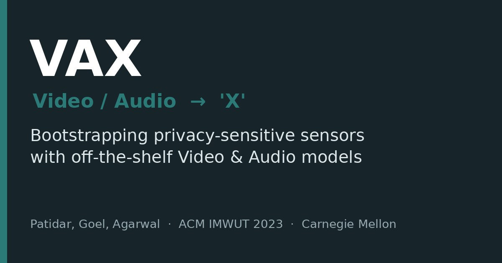

ACM IMWUT 2023 · UbiComp
VAX: Using Existing Video and Audio-based Activity Recognition Models to Bootstrap Privacy-Sensitive Sensors
VAX uses labels from existing video and audio models to train activity-recognition models for privacy-sensitive sensors, so the camera and microphone can be removed after training.